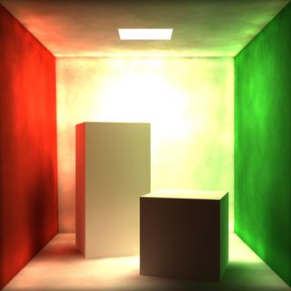
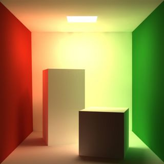
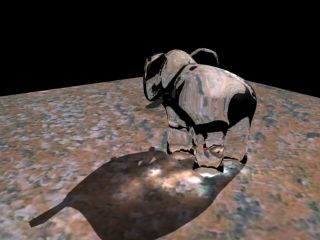
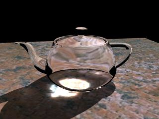
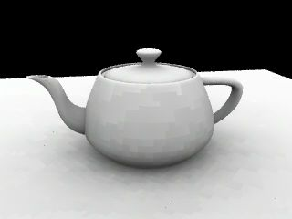
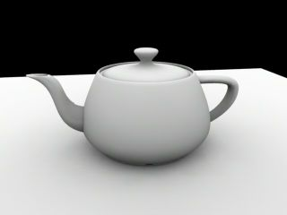
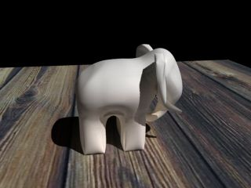

Documentation/Global illumination
From PixieWiki
Pixie supports global illumination and photon mapping. The mechanism for
global illumination is very similar to the new extensions introduced with PrMan
11.
[edit] Photon Mapping
Photon mapping can be used to get a coarse approximation to the incident irradiance at a particular point. Note that since photon maps are not very accurate, this is only a very coarse approximation. This means photon maps should only be used after the first bounce when the influence of the incident irradiance estimate on the screen is low. Image on the left is a direct visualization of the photon map. Notice the non uniform shading. The rightmost image is computed using irradiance caching and using photon maps only for the second bounce. You should use photon maps with irradiance caches. In a separate pass, you should first compute the photon map. You should use the new photon hider for this:
Hider "photon" "emit" 1000000 WorldBegin Attribute "photon""globalmap" "global.gpm" ... WorldEnd
|  |  |
The rib fragment above causes one global photon map to be saved into global.gpm. You can attach different photon maps to different objects. You can also use causticmap instead of globalmap to create a caustics photon map. The only difference between them is that the caustic photon map only contains photons that hit a reflective / refractive (specular) object first. To look up a previously created photon map, you can use the photonmap shading language command:
color photonmap(string map,point P,normal N,...);
where map is the name of the photon map (e.g. global.gpm),P is the lookup point and N is the lookup normal. The following optional parameters can also be passed:
| uniform float estimator | The number of photons to use for lookup |
| niform float maxRadius | The maximum lookup radius |
[edit] Caustics
Caustics can be generated by directly visualizing the caustics photon maps that Pixie generates. Notice that since these photon maps are visualized directly, they need to have lots of photons. Figures below demonstrate this effect.
|  |  |
[edit] Irradiance Caching
Pixie can compute occlusion and/or irradiance values sparsely and interpolate them for the final rendering. This allows fast and accurate diffuse interreflections without noise. The following two shading language commands can be used:
color indirectdiffuse(point P,normal N,float numSamples,...); float occlusion(point P,normal N,float numSamples,...);
The indirectdiffuse command computes diffuse interreflection. It will either interpolate using the previous diffuse interreflection samples nearby, or compute a new sample. The occlusion computes the coverage (i.e.: the fraction of the hemisphere that is occluded) using the same method. The only difference between them is that indirectdiffuse shades the rays that are shot for computing a sample whereas occlusion doesn't. This makes occlusion faster than indirectdiffuse. The following optional parameters can be pass to both of these commands:
| uniform float minR | The closest distance between samples |
| uniform float maxR | The farthest distance between samples |
| varying float occlusion | The occlusion value (output) |
| varying color irradiance | The irradiance value (output) |
| string environmentmap | An environment map to be consulted for rays which don't hit anything |
Notice that you can obtain the occlusion value from indirectdiffuse and vice-versa:
float oc; vector ic; ic =indirectdiffuse(P,N,256,"occlusion",oc);
Since in a single pass, the renderer will be forced to do some extrapolation, the generated image may have blocky artifacts. These can be avoided by doing another pass using the irradiance cache computed by the previous pass. The figures below demonstrate the extrapolation artifacts and the image computed after a second pass:
|  |  |
The image on the left is computed in the first pass and suffers from blocky artifacts due to extrapolation. The image on the right is computed in the second pass. This scene contains only one light source shader: ambientocclusion (available in the shaders directory).
Figures below further demonstrate the global illumination capabilities of Pixie.
|  |
These images were created using irradiance caching via indirectdiffuse. This scene contains only one light source shader: ambientindirect (available in the shaders directory).

{kind=link}
{kind=link}
{kind=link}
{kind=link}
{kind=link}
{kind=link}
{kind=link}
{kind=link}